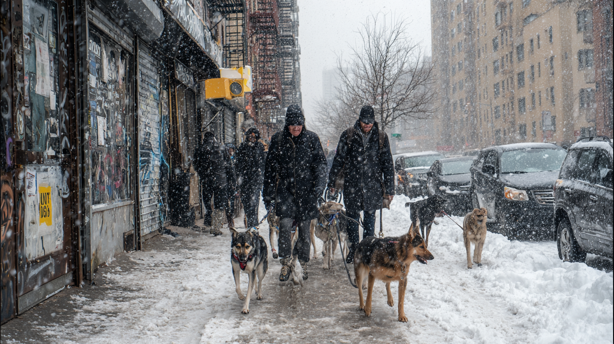
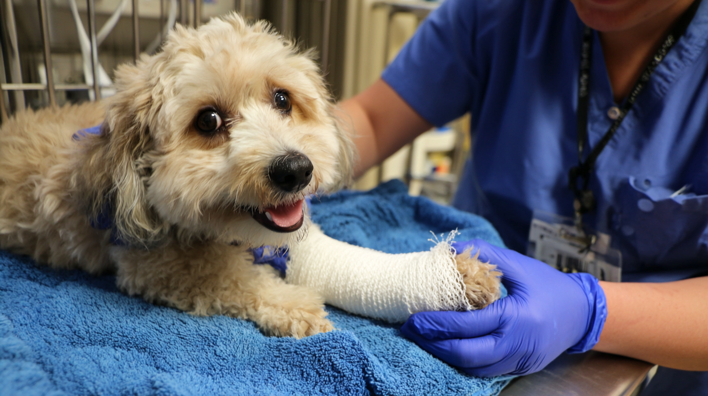

Dog Walking
For workdays, long shifts, or packed schedules, dog walking is one of the most useful recurring services for Manhattan pet owners.
Recommended providers
Dog walking, pet sitting, drop-in visits, cat care, and practical support for busy Manhattan schedules.


Manhattan pet owners often need dependable support during work hours, long days, travel, and packed weekly schedules. This page is built around the pet service categories people look for most often.
It gives pet owners a cleaner starting point and gives local pet businesses a place to align with real local demand.
Practical support for Manhattan pet owners who need dependable help.
For workdays, long shifts, or packed schedules, dog walking is one of the most useful recurring services for Manhattan pet owners.
Need someone reliable while you are away? Pet sitting helps keep your pet on a stable routine in a familiar environment.
Fast check-ins for feeding, litter, walks, fresh water, and short companionship visits.
Cat owners often need visit-based help for feeding, litter maintenance, check-ins, and short-term care.
Traveling pet owners need flexible support that keeps routines consistent while they are out of town.
Some owners want care that includes both pet support and presence in the home while they are away.
Younger pets often need more frequent visits, more routine structure, and more daily attention.
Older pets may need gentler care, medication reminders, shorter walks, and consistent observation.
Many Manhattan pet owners need recurring support, not one-time care. Weekly help keeps routines easier to manage.
Dog walker. Pet sitter. Trainer. Groomer. Pet-focused brand. Need branding, content, social media, website, SEO, or AIO help? We help local businesses improve visibility.
Busy schedules and apartment living create steady demand for reliable pet support.
Many owners need daily help while they are at work or tied up in long city schedules.
Travel creates recurring demand for sitting, visits, and at-home care routines.
Pet businesses benefit from better branding, stronger websites, clearer service pages, and stronger local visibility.
Many pet businesses rely heavily on trust and presentation. A stronger brand and stronger digital presence can improve inquiries and retention.
We help local businesses improve websites, content, SEO, social media, and AIO so they show up better and compete better.
We can help. Visit Elettro.com to learn more about business growth support.
Explore apartment services for practical Manhattan home and rental needs.
View Apartment ServicesExplore city help for building issues, complaints, and common local problem categories.
View City Help